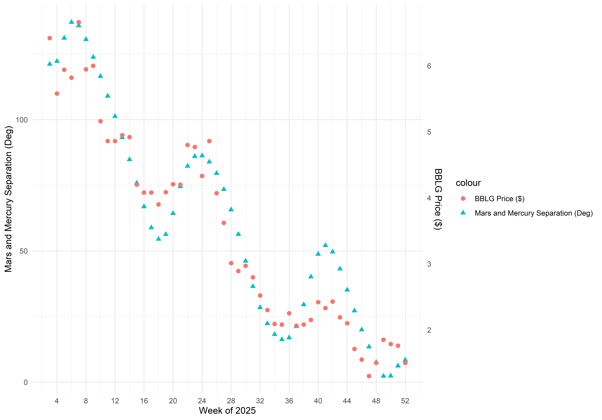
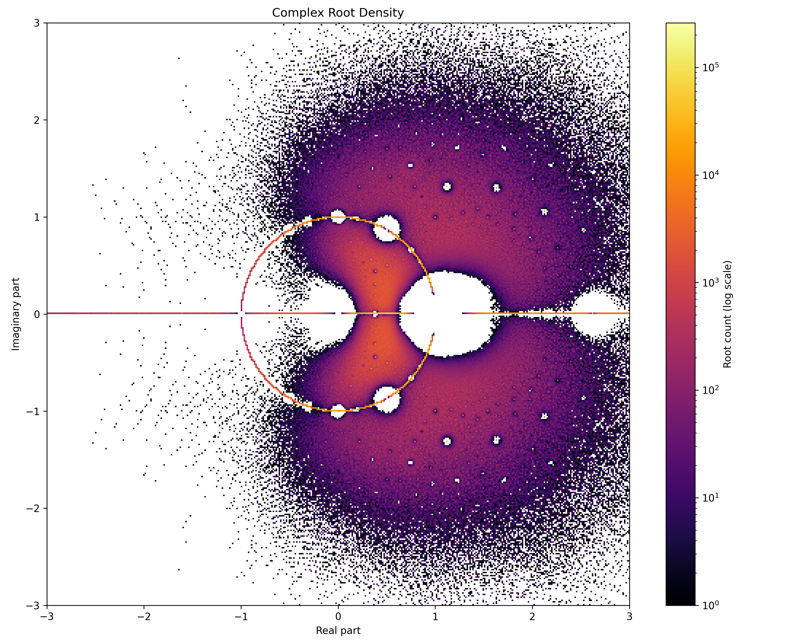

Student Projects
-
Fall 2026
The 2026 SCUDEM team (Ethan and Jake) created a MATLAB simulation to model the
effects of communication on foraging. Two monkeys search a forest where only a few
trees bear fruit.
Each monkey is drawn toward nearby trees it hasn't checked yet,
and the two try to stay close enough to hear each other without getting in each
other's way. When they're within range, they share what they've learned:
a report
of an empty tree saves the partner a wasted trip, and a report of fruit sends the
partner straight to it. Messages are more likely to be lost the farther apart the
monkeys are.
The animation below starts a new random forest each time a trial ends.
You can interact with the full simulation, and change its settings, on its own page.
-
Spring 2026
In Spring 2026, my Applied Statistics course completed a correlation project to find spurious correlations between planetary data and any publicly available time series data. We looked for pairings where r > 0.95.
Most students chose stock prices. One student found found, among many other correlated stocks, the data distribution below.
This pairs the separation of Mars and Mercury as measured degrees in the night sky of Florence AL each Wednesday in 2025 with the weekly low price of Bones Biologic Corp traded over NASDAQ.

-
Spring 2025
In Spring 2025, my Linear Algebra course held a contest to build the best neural net trained to multiply matrices.
The winner was JW. His NN is found here: JW Matrix NN
-
Spring 2025
In the spring, Joseph Pope built a census of the Alexander polynomials of all prime knots up to 19 crossings.
This census is VERY large (10+GB), so only knots through the 15 alternating crossings are avaliable here:
Below is a heatmap of the complex roots found.
